6
Monte Carlo predicts the behavior of a circuit statistically when part values are varied within their tolerance range. Monte Carlo also calculates yield, which can be used for mass manufacturing predictions.
Use Monte Carlo for:
Monte Carlo requires:
See Chapter 2, Libraries.
See "Procedure for creating measurement expressions" .
Setting options
The simulation data will be overwritten by each new run. Only the last run's data will be saved.
Importing measurements
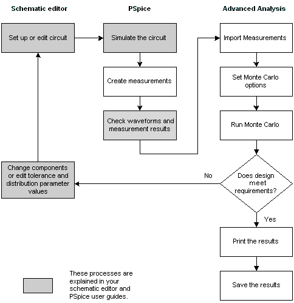
Starting out:
The simulations can be Time Domain (transient), DC Sweep, and AC Sweep/Noise analyses.
See Chapter 2, Libraries, for information about component tolerances.
|
2
|
Run a PSpice simulation. |
Note: Advanced Analysis Monte Carlo does not use PSpice Monte Carlo settings.
Note: You can run Advanced Analysis Monte Carlo on more than one simulation profile at once. However, if you have a multi-run analysis set up in PSpice (for example, a parametric sweep or a temperature sweep), Advanced Analysis Monte Carlo will reduce the simulation profile to one run before starting the Advanced Analysis Monte Carlo calculations. For temperature sweeps, the first temperature value in the list will be used for the Advanced Analysis Monte Carlo calculations.
For information on circuit layout and simulation setup, see your schematic editor and PSpice user guides.
Note: For information on setting up measurements, see "Procedure for creating measurement expressions" .
|
|
From the PSpice menu in your schematic editor, select Advanced Analysis / Monte Carlo. |
The Advanced Analysis Monte Carlo tool opens.
The Import Measurement(s) dialog box appears.
For more information, see Importing measurements from PSpice in the Example section.
From the Advanced Analysis Edit menu, select Profile Settings, click the Monte Carlo tab, and enter the following Monte Carlo options:
This is the number of times the selected simulation profiles will be run. For each run, component parameters with tolerances will be randomly varied. Run number one uses nominal component parameter values. The maximum number of runs is primarily limited by the amount of available memory.
The default starting run number is one. This is the nominal run. If the random seed value is kept constant, then you can change the starting run number in order to duplicate a partial Monte Carlo simulation. You can use this to isolate specific random results which are of particular interest, without having to run an entire Monte Carlo simulation again.
The random number generator uses this value to produce a sequence of random numbers. Change the seed in order to produce a unique random sequence for each Monte Carlo simulation. If the seed and device properties are not changed, then the same sequence of random numbers will be generated each time a Monte Carlo analysis is done. You can use this procedure to reproduce a random simulation.
This value determines the number of divisions in the histogram. A typical value is one tenth of the number of runs. The minimum value is one and the maximum value is determined by the amount of available memory. It is recommended that this value be less than 10,000.
Monte Carlo calculates a nominal value for each measurement using the original parameter values.
After the nominal runs, Monte Carlo randomly calculates the value of each variable parameter based on its tolerance and a flat (uniform) distribution function. For each profile, Monte Carlo uses the calculated parameter values, evaluates the measurements, and saves the measurement values.
Monte Carlo repeats the calculations for the specified number of runs, then calculates and displays statistical data for each measurement.
For more detail on the displayed statistical data, see Example's section "Reviewing Monte Carlo data" .
The MonteCarlo analysis can only be run if tolerances are specified for the component parameters. In case you want to prevent running these analysis on a component, you can do so by using the TOL_ON_OFF property.
In the schematic design, attach the TOL_ON_OFF property to the device instance for which you do not want to perform the Sensitivity and MonteCarlo analysis. Set the value of the TOL_ON_OFF property to OFF. When you set the property value as OFF, the tolerances attached to the component parameters will be ignored and therefore, the component parameters will not be available for analysis.
For each run, Monte Carlo randomly varies parameter values within tolerance and calculates a single measurement value. After all the runs are done, Monte Carlo uses the run results to perform statistical analyses.
|
1
|
Click the Statistics tab to bring the table to the foreground. |
A black arrow appears in the left column and the row is highlighted. The data in the graph corresponds to the selected measurement only.
You can review results reported for each measurement:
A PDF graph is a way to display a probability distribution. It displays the range of measurement values along the x-axis and the number of runs with those measurement values along the y-axis.
The corresponding PDF graph will display all measurement values based on the Monte Carlo runs.
A pop-up menu appears.
|
|
|
Select Zoom In to focus on a small range of values. |
|
|
|
Select CDF Graph to toggle from the default PDF graph to the CDF graph. |
|
|
|
Select Percent Y-axis to toggle from the default absolute y-axis Number of Runs to Percent of Runs. |
From the Edit menu, select Profile Settings, click the Monte Carlo tab, and typing a new number in the Number of Bins text box.
If you want more bars on the graph, specify more bins--up to a maximum of the total number of runs. Higher bin numbers show more detail, but require more runs to be useful.
The CDF graph is another way to display a probability distribution. In mathematical terms, the CDF is the integral of the PDF.
The statistical display for the cumulative distribution function is shown on the CDF graph.
A pop-up menu will appear.
|
|
|
Select Zoom In to focus on a small range of values. |
|
|
|
Select PDF Graph to toggle from the current CDF graph to the default PDF graph. |
|
|
|
Select Percent Y-axis to toggle from the default absolute y-axis Number of Runs to Percent of Runs. |
The cursor's location on the graph changes, and the measurement min or max values in the Statistical Information table are updated. A new calculated yield displays.
To restrict the statistical calculations displayed in the Statistical Information table to the range of samples within the cursor minimum and maximum range, set the cursors in their new locations and select the restrict calculation range command from the right click pop-up menus.
See Working with cursors above.
The cross-hatched range of values that appears on the graph is the restricted range.
The Raw Measurements table is a read-only table that has a one-to-one relationship with the Statistical Information table. For every measurement row on the Raw Measurements table, there is a corresponding measurement row on the Statistical Information table. The run values in the Raw Measurements table are used to calculate the yield and statistical values in the Statistical Information table.
The Raw Measurements table appears.
The row of data is sorted in ascending or descending order.
Note: Copy and paste the row of data to an external program if you want to further manipulate the data. Use the Edit menu or the right click pop-up menu copy and paste commands.
|
3
|
From the View menu, select Log File / Monte Carlo to view the component parameter values for each run. |
If you do not achieve your goals in the first Monte Carlo analysis, there are several things you can do to fine-tune the process.
To review preliminary results on a large number of runs:
The analysis stops at the next interruptible point, available data is displayed and the last completed run number appears in the output window.
If a Monte Carlo analysis has been stopped, you cannot resume the analysis.
If you do not get the results you want, you can return to the schematic editor and change circuit parameters.
|
2
|
Rerun the PSpice simulation and check the results. |
If you do not get the results you want and your design specifications are flexible, you can add, edit, delete or disable a measurement and rerun Monte Carlo analysis.
Cells with cross-hatched backgrounds are read-only and cannot be edited.
The new value will display in the Cursor Min or Cursor Max column in the Statistical Information table.
Note: For instructions on setting up new measurements, see "Procedure for creating measurement expressions" .
Select Send To from the pop-up menu.
Or:
From the File menu, select Print.
To print information from the Raw Measurements table on the Raw Meas tab, copy and paste to an external program and print from that program. You can also print the Monte Carlo Log File, which contains more detail about measurement parameters. From the View menu select Log File, Monte Carlo.
Or:
From the File menu, select Save.
The final results will be saved in the Advanced Analysis profile (.aap).
This example uses the tutorial version of RFAmp located at:
<target directory>\PSpice\tutorial\capture\pspiceaa\rfamp
The circuit is an RF amplifier with 50-ohm source and load impedances. It includes the circuit schematic, PSpice simulation profiles, and measurements.
<target directory>\PSpice\Capture_Samples\AdvAnls\RFAmp directory.
<target directory>
\PSpice\tutorial\Capture\pspiceaa\rfamp
The RF amplifier circuit example

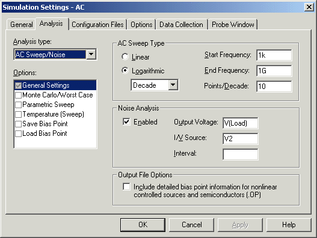
The waveforms in PSpice are what we expected.
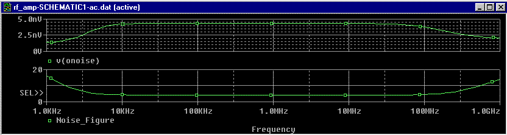
The measurements in PSpice give the results we expected.
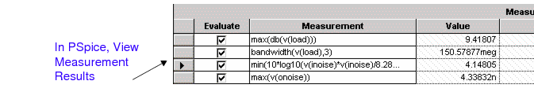
The Advanced Analysis Monte Carlo tool opens.
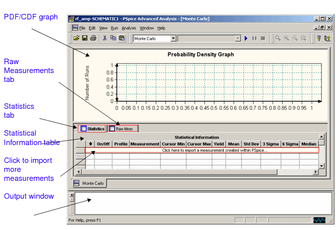
The Import Measurement(s) dialog box appears.
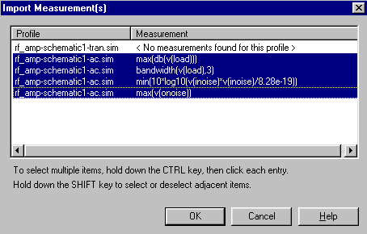

|
1
|
From the Advanced Analysis Edit menu, select Profile Settings, click the Monte Carlo tab, and enter the values shown in the dialog box. |
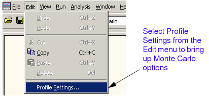
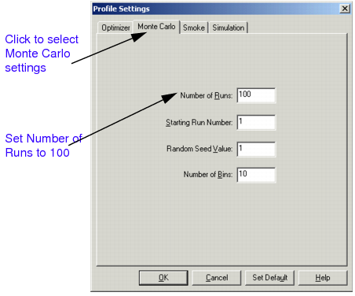
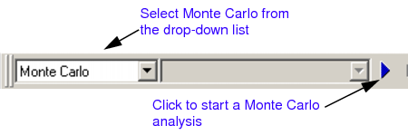
The Monte Carlo analysis begins. The messages in the output window give you the status.
Monte Carlo calculates a nominal value for each measurement using the original parameter values.
After the nominal runs, Monte Carlo randomly calculates the value of each variable parameter based on its tolerance and a flat (uniform) distribution function. For each profile, Monte Carlo uses the calculated parameter values, evaluates the measurements, and saves the measurement values.
Monte Carlo repeats the above calculations for the specified number of runs, then calculates and displays statistical data for each measurement.
Ten bins of measurement data are displayed on the graph.

The Statistics tab is already in the foreground and the Statistical Information table contains results for the four imported measurements.
A black arrow appears in the left column and the row is highlighted. The values in the PDF graph correspond to this measurement.
For each Monte Carlo run, Monte Carlo randomly varies parameter values within tolerance and calculates a single measurement value. After all the runs are done, Monte Carlo uses the run results to perform statistical analyses. The following statistical results are reported for our example: Mean, Std Dev, 3 Sigma, 6 Sigma, and Median.
In addition a yield is calculated and reported.
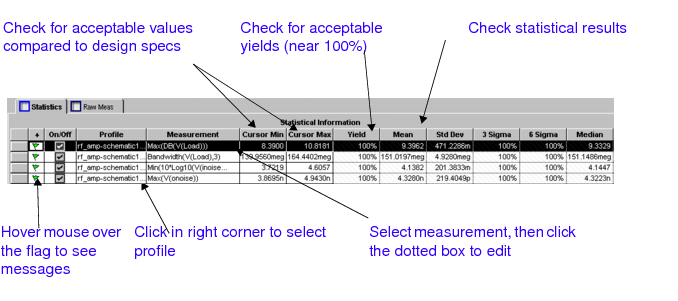
The PDF graph is a bar chart. The x-axis shows the measurement values calculated for all the Monte Carlo runs.
The y-axis shows the number of runs with measurement results between the x-axis bin ranges. The statistical display for this measurement's probability density function is shown on the PDF graph.
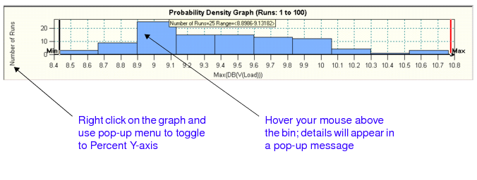

The Y-axis units changes from Number of Runs to Percent of Runs.

|
2
|
From the Edit menu, select Profile Settings, click the Monte Carlo tab, select the Number of Bins text box and type the number 20 in place of 10. |
Notice the higher level of detail on the PDF graph.
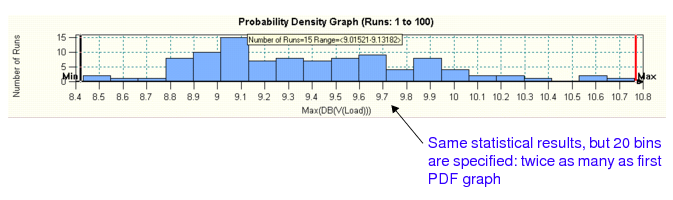
|
4
|
Select Zoom Fit to show the entire graph with cursors. |
|
5
|
Click the Max cursor to select it (it turns red when selected), then click the mouse in a new location on the x-axis. |
The cursor's location changes and the max value and yield numbers are updated in the Statistical Information table.
Note: Moving the cursor does not update the rest of the statistical results for this new min / max range. Use Restrict Calculation Range to recalculate the rest of the statistical results for this min / max range.
The CDF graph is a cumulative stair-step plot.
|
1
|
Select the Max(DB(V(Load))) measurement in the Statistical Information table. |
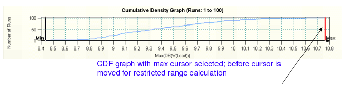
The Max cursor turns red.
The cursor moves to the new position on the x-axis.
|
6
|
Click the Min cursor and click the mouse at 9 on the x-axis. |
When you change the cursor location the min, max, and yield values are updated on the Statistical Information table.

To quickly view statistical results for a different min / max range, use the Restrict Calculation Range command.
Or:
Edit the min or max values in the Statistical Information table.
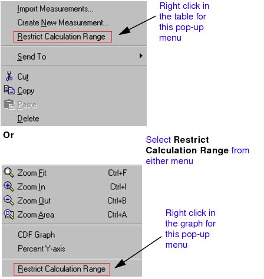
Monte Carlo recalculates the statistics and only includes the restricted range of values.

This read-only table has a one-to-one relationship with the Statistical Information Table. For every row on this table, there is a corresponding row on the other table where the statistics are displayed.
The Raw Measurements table appears.
|
2
|
Select the Max(DB(V(load))) measurement row and double click the far left row header. |
The row run data is sorted in ascending order.
Note: If you want to use the data in an external program, you can copy and paste a row of data.

The analysis stops, available data is displayed, and the last completed run number appears in the output window.
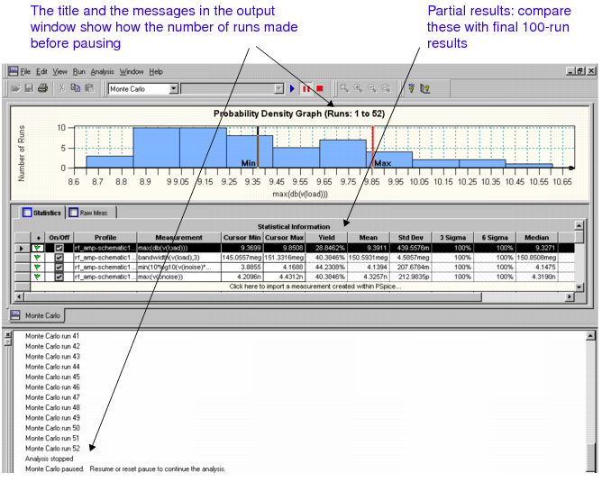
When running other examples, if you do not get the results you want, go to the schematic editor and change circuit information.
Or:
Change the tolerance of a parameter on an existing component.
|
2
|
Rerun the PSpice simulation and verify that the results are what you expect. |
If you do not get the results you want and your design specifications are flexible, you can change a specification or delete a measurement and rerun Monte Carlo analysis.
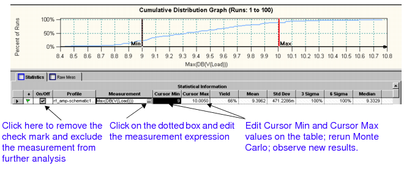
If you are planning an analysis of thousands of runs on a complex circuit, you can turn off the simulation data storage option to conserve disk space.
To turn off data storage:
The simulation data will be overwritten by each new run. Only the last run's data will be saved.

The simulation data will be overwritten by each new run. Only the last run's data will be saved.
When running other examples, if you do not get the results you want, go to the schematic editor and change circuit information.
Or:
Change the tolerance of a parameter on an existing component.
|
2
|
Rerun the PSpice simulation and verify that the results are what you expect. |
Or:
From the File menu, select Print.
To print information from the Raw Measurements table on the Raw Meas tab, copy and paste to an external program and print from that program. You can also print the Monte Carlo Log File, which contains more detail about measurement parameters.
Or:
From the File menu, select Save.
The final results will be saved in the Advanced Analysis profile (.aap).